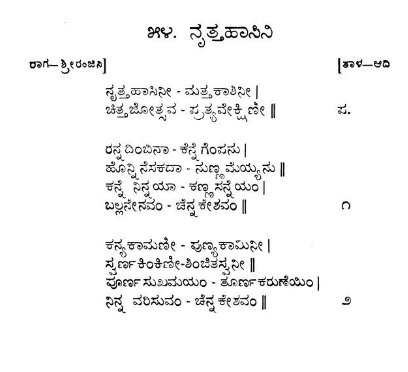
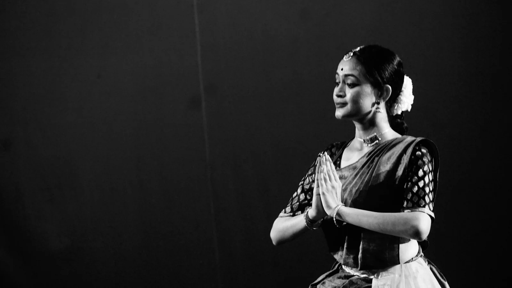

Darśana
Dance as a way of seeing. Attention gives a gesture its depth and makes space for meaning.
 BHARATANATYAM
BHARATANATYAM02 / The inner landscape
A reflective gaze. A conversation between poetry, sculpture and dance.

To look closely.
To turn inward.
The literary connection
Pratyavēkṣiṇī appears in the opening stanza of Nṛttahāsinī (ನೃತ್ತಹಾಸಿನಿ), a poem in D. V. Gundappa’s Antaḥpura Gīte. The collection draws its poetic world from the madanikā sculptures of Belur’s Chennakeshava temple.
In that meeting of stone, song and imagination, a sculpted gesture becomes an inner life. It offers a fitting point of departure for a dancer: to observe with care, to reflect, and to let form become experience.
The Sanskrit verbal root praty-ava-īkṣ carries the senses of looking closely, examining and considering. Here, “she who observes and reflects” is the artistic reading of Pratyavēkṣiṇī.
Further reading: B. V. K. Sastri on Antahpura Geete, The Music Academy Journal, 1975; Sanskrit dictionary entry.
The poem behind the name
D. V. Gundappa
Antaḥpura Gīte
The opening stanza addresses the dancing figure as Pratyavēkṣiṇī. The name carries that poetic connection into Krithi’s practice: a gaze attentive to form, feeling and the life within.
Read the original Kannada page
Dance as a way of seeing. Attention gives a gesture its depth and makes space for meaning.
Practice as a continuing discipline. Repetition sharpens the form while reflection opens the experience.
Feeling made perceptible. The body, music and gaze meet in the telling of a story.
